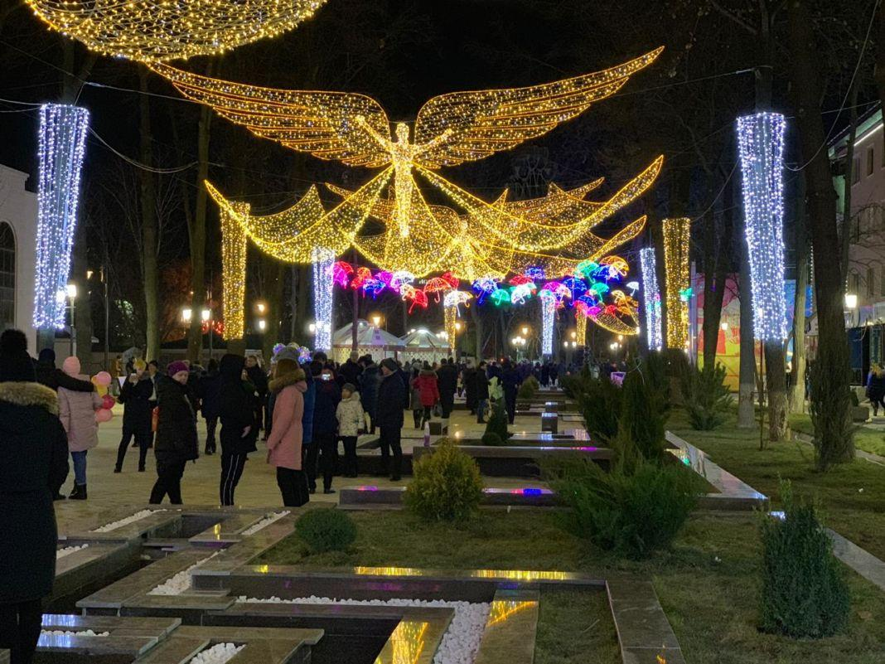
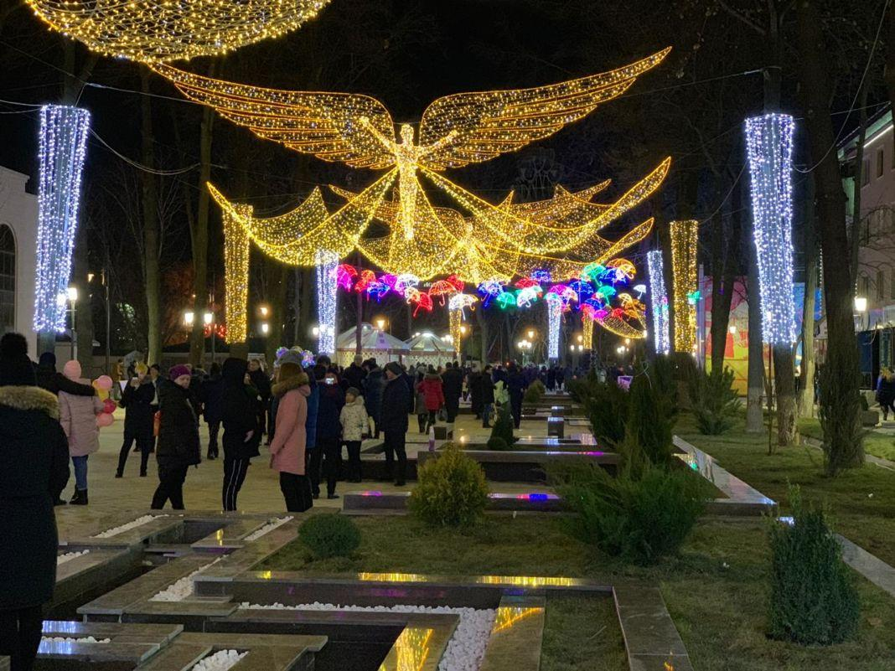

Common place to take a picture
Shymkent is located in the south of Kazakhstan. Shymkent is one of three region Kazakh cities which has status equal to "city of republican significance." Shymkent is a very beautiful city with many beautiful places to visit for newcomers.
Shymkent was founded in the twelfth century as a caravanserai to protect a nearby Silk Road trade town, Sayram, 10 km to the east. Sayram is also an ancient city, where I am from. Sayram has many ancient buildings.
Shymkent grew as a market center for trade between Turkic nomads and the settled Sogdians. It was destroyed several times: by Genghis Khan, soldiers from the southern Khanates, and by nomad attacks.
Shymkent was founded as a hub for economic development in South
In the early 19th century, it became part of the khanate of Kokand before it was captured by the Russians in 1864. It was renamed Chernyaev in 1914 and renamed Shymkent in 1924. Following the Russian conquest, Shymkent was a city of trade between nomadic Turks and sedentary Turks, and was famous for its kumis.
Kazakhstan in the 20th century, and rapid growth was evolving in the second half of the century. To date, there are about 70 factories, plants and other manufacturing companies in the area.
As I mentioned before Shymkent is located in the South of Kazakhstan. Its weather is very hot comparing it with the north of Kazakhstan.
Climate
Vegetation
Sightseeing
 
